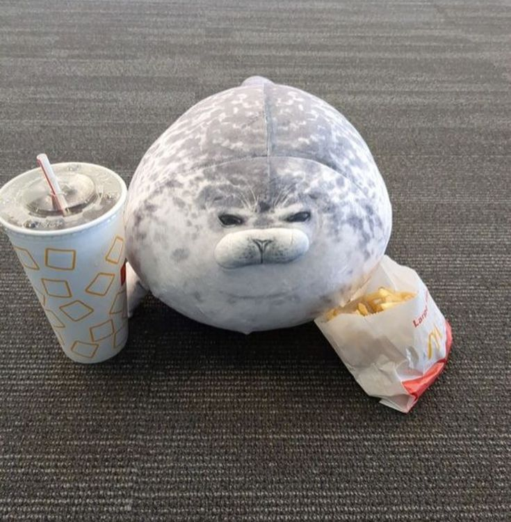

Últimamente no paraba de pensar en nuestra amistad y creo que por primera vez pude entender cosas que antes no veía. Muchas veces me alejaba o desaparecía cuando me sentía sobrepasada, y en mi cabeza parecía algo “obvio” o normal, como si los demás fueran a entender automáticamente lo que me pasaba. Pero ahora me doy cuenta de que desde afuera eso probablemente solo se sentía como distancia, indiferencia o incluso rechazo. Y creo que cometí el error de esperar que entendieran actitudes que nunca expliqué realmente. No quiero usar esto como excusa ni victimizarme. Sé que los lastimé aún cuando son personas realmente importantes para mí y que varias veces reaccioné culpándolos por cosas que ustedes ni siquiera podían entender, porque yo nunca las comunicaba bien. Aun así, quiero que sepan que jamás dejaron de importarme. Cada uno significó muchísimo para mí y sigo apreciando todo lo que compartimos, incluso si hoy las cosas son diferentes. No hago esto con intención de recuperar todo ni volver automáticamente a lo que fuimos antes. Sé que algunas heridas cambian las relaciones. Pero sí quería disculparme de verdad esta vez, reconociendo específicamente mis errores y no escondiéndolos detrás de un “perdón por todo”. Gracias por haber estado conmigo incluso en mis peores momentos. Sé que no pude despedirme como quería el último día de la prepa y me duele no haber estado en ese momento. Pensé que Silvana aún nos daría clase pero no fue así; aun así quiero agradecerles por cada risa, cada apoyo y cada recuerdo que compartimos. Ustedes hicieron que esta etapa fuera inolvidable y siempre los llevaré conmigo. 💓 Con mucho más que decir pero no saber como hacerlo, les deseo una vida feliz y llena de éxito, que cumplan todas sus metas y sueños pero más impostante, sigan hablando/jugando y sigan siendo esos grandiosos niños que una vez me dieron un lugar y fueron mis amigos. De verdad muchas gracias, fueron una bandita en mi corazón ❤️🩹. By YomYom.
